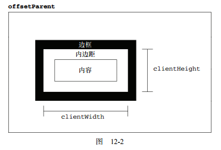

元素大小
偏移量
1.4 个属性可以取得元素的偏移量。 1)offsetHeight：元素在垂直方向上占用的空间大小，以像素计。包括元素的高度、（可见的）水平滚动条的高度、上边框高度和下边框高度。 2)offsetWidth：元素在水平方向上占用的空间大小，以像素计。包括元素的宽度、（可见的）垂直滚动条的宽度、左边框宽度和右边框宽度。 3)offsetLeft：元素的左外边框至包含元素的左内边框之间的像素距离。 4)offsetTop：元素的上外边框至包含元素的上内边框之间的像素距离。 包含元素的引用保存在 offsetParent 属性中。offsetParent 属性不一定与 parentNode 的值相等。 但是包含元素必须是relative、absolute样式的元素。 2.获取某个元素在页面上的偏移量，如下： function getElementLeft(ele){ var offleft = ele.offsetLeft, curr = ele.offsetParent; while(curr){ offleft += curr.offsetLeft; curr = curr.offsetParent; } return offleft; }; function getElementTop(ele){ var offtop = ele.offsetTop, curr = ele.offsetParent; while(curr){ offtop += curr.offsetTop; curr = curr.offsetParent; } return offtop; }; 合二为一： function getElementOffset(ele){ var offtop = ele.offsetTop, offleft = ele.offsetLeft, curr = ele.offsetParent; while(curr){ offtop += curr.offsetTop; offleft += curr.offsetLeft; curr = curr.offsetParent; } return {offsetTop: offtop, offsetLeft: offleft}; }
客户区大小
1. 有关客户区大小的属性有两个：clientWidth 和 clientHeight。 1)clientWidth 属性是元素内容区宽度加上左右内边距宽度。 2)clientHeight 属性是元素内容区高度加上上下内边距高度。 2. 从字面上看，客户区大小就是元素内部的空间大小，因此滚动条占用的空间不计算在内。 要确定浏览器视口大小，可以使用 document.documentElement 或 document.body（在混杂模式下） 的clientWidth 和 clientHeight。 function getViewport(){ if (document.compatMode === 'BackCompat') { return { width: document.body.clientWidth, height: document.body.clientHeight } } else { return { width: document.documentElement.clientWidth, height: document.documentElement.clientHeight } } } 注意：对于运行在混杂模式下的 IE，则需要用 document.body 代替 document.documentElement。

滚动大小
1. 4 个与滚动大小相关的属性。 scrollHeight：在没有滚动条的情况下，元素内容的总高度。 scrollWidth：在没有滚动条的情况下，元素内容的总宽度。 scrollLeft：被隐藏在内容区域左侧的像素数。通过设置这个属性可以改变元素的滚动位置。 scrollTop：被隐藏在内容区域上方的像素数。通过设置这个属性可以改变元素的滚动位置。 2.带有滚动条 带有垂直滚动条的页面总高度就是 document.documentElement.scrollHeight。混杂模式下为 document.body.scrollHeight。 3.不带滚动条 对于不包含滚动条的页面而言，scrollWidth 和 scrollHeight 与 clientWidth 和 clientHeight 之间的关系并不十分清晰。 1)Firefox 中这两组属性始终都是相等的，但大小代表的是文档内容区域的实际尺寸，而非视口的尺寸。 2)Opera、Safari 3.1 及更高版本、Chrome 中的这两组属性是有差别的，其中 scrollWidth 和 scrollHeight 等于视口大小，而 clientWidth 和 clientHeight 等于文档内容区域的大小。 3)IE（在标准模式）中的这两组属性不相等，其中 scrollWidth 和 scrollHeight 等于文档内容区域的大小，而 clientWidth 和 clientHeight 等于视口大小。 因此，在确定文档的总高度时（包括基于视口的最小高度时），必须取得 scrollWidth/clientWidth 和 scrollHeight/clientHeight 中的最大值，才能保证在跨浏览器的环境下得到精确的结果。 var docHeight = Math.max(document.documentElement.scrollHeight, document.documentElement.clientHeight); var docWidth = Math.max(document.documentElement.scrollWidth, document.documentElement.clientWidth); 注意，对于运行在混杂模式下的 IE，则需要用 document.body 代替 document.documentElement。 4.scrollLeft 和 scrollTop 属性既可以确定元素当前滚动的状态，也可以设置元素的滚动位置。 在元素尚未被滚动时，这两个属性的值都等于 0。
确定元素大小
IE、Firefox 3+、Safari 4+、Opera 9.5及 Chrome为每个元素都提供了一个 getBoundingClientRect()方法。 这个方法会返回一个矩形对象，包含 4 个属性：left、top、right 和 bottom。 这些属性给出了元素在页面中相对于视口的位置。 注意：IE8-认为文档的左上角坐标是(2, 2)，而其他浏览器认为是(0, 0)。 兼容代码： var getBoundingClientRect = function getBCR(ele){ if (typeof getBCR.offset !== 'number') { var scrollTop = document.documentElement.scrollTop; var div = document.createElement('div'); div.style.cssText = "position:absolute;top:0;left:0;"; document.body.appendChild(div); getBCR.offset = -div.getBoundingClientRect().top - scrollTop; document.body.removeChild(div); div = null; } var rect = ele.getBoundingClientRect(); var offset = getBCR.offset; return { left: rect.left + offset, right: rect.right + offset, top: rect.top + offset, bottom: rect.bottom + offset } } 对于不支持 getBoundingClientRect()的浏览器： var getBoundingClientRect = function getBCR(ele){ var scrollTop = document.documentElement.scrollTop; var scrollLeft = document.documentElement.scrollLeft; if (ele.getBoundingClientRect) { if (typeof getBCR.offset !== 'number') { var div = document.createElement('div'); div.style.cssText = "position:absolute;top:0;left:0;"; document.body.appendChild(div); getBCR.offset = -div.getBoundingClientRect().top - scrollTop; document.body.removeChild(div); div = null; } var rect = ele.getBoundingClientRect(); var offset = getBCR.offset; return { left: rect.left + offset, right: rect.right + offset, top: rect.top + offset, bottom: rect.bottom + offset } } else { var offLeft = getElementLeft(ele), offTop = getElementTop(ele); return { left: offLeft - scrollLeft, right: offLeft + ele.offsetWidth - scrollLeft, top: offTop - scrollTop, bottom: offTop + ele.offsetHeight - scrollTop } } }